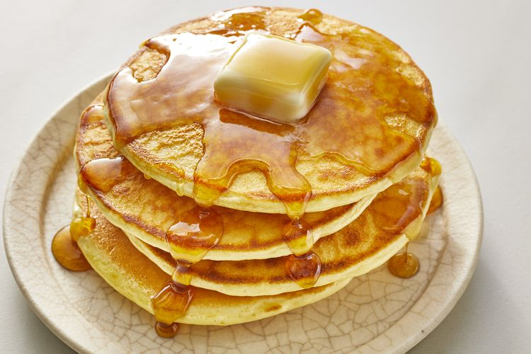

Pancakes

It's not hard to make homemade pancakes — you just need a good recipe. That's where we come in! You'll find the step-by-step recipe below, but here's a brief overview of what you can expect:
Ingredients
- Flour:This homemade pancake recipe starts with all-purpose flour.
- Baking powder: Baking powder, a leavener, is the secret to fluffy pancakes.
- Sugar: Just a tablespoon of white sugar is all you'll need for subtly sweet pancakes.
- Salt: A pinch of salt will enhance the overall flavor without making your pancakes taste salty.
- Milk and butter: Milk and butter add moisture and richness to the pancakes.
- Egg: A whole egg lends even more moisture. Plus, it helps bind the pancake batter together.
Home